Settle
Breathe naturally
Stand with the feet together and palms at the sides. Keep the head upright, lips lightly closed, and breathe through the nose. Settle attention at the lower dantian for about one minute.
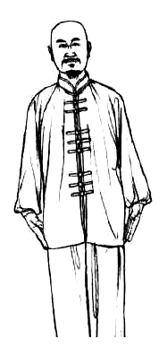
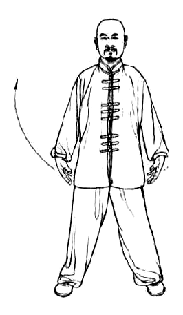
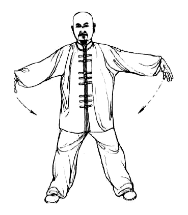
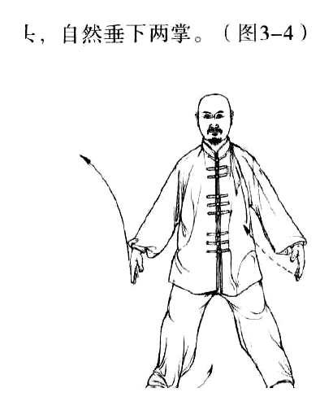
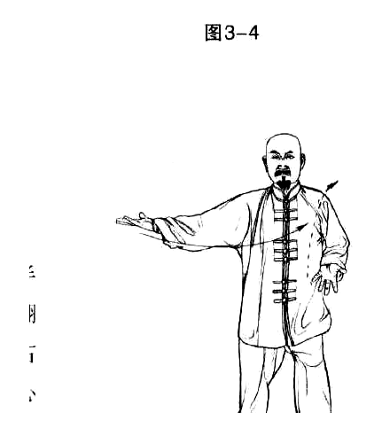
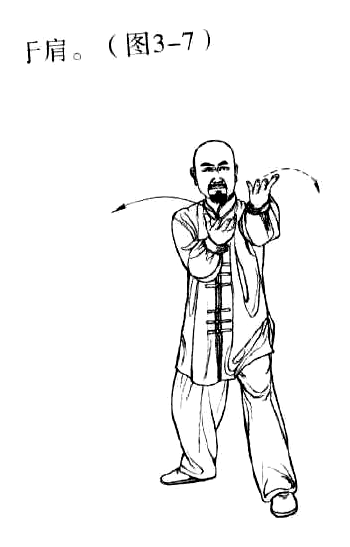
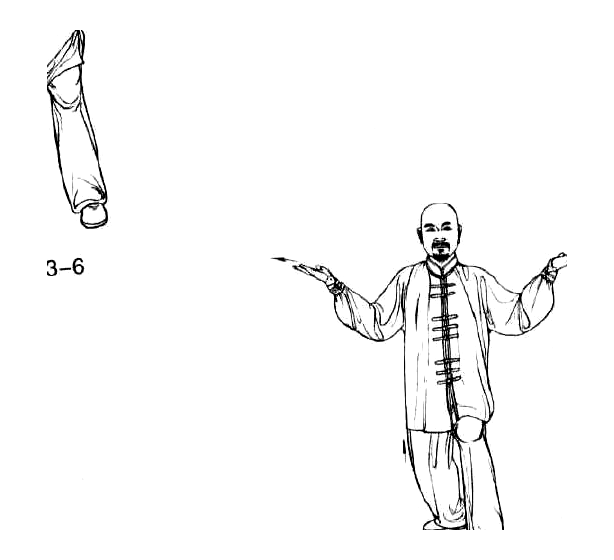
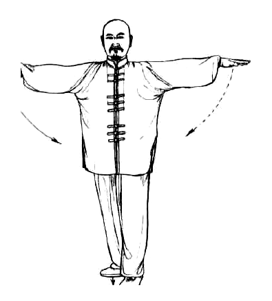
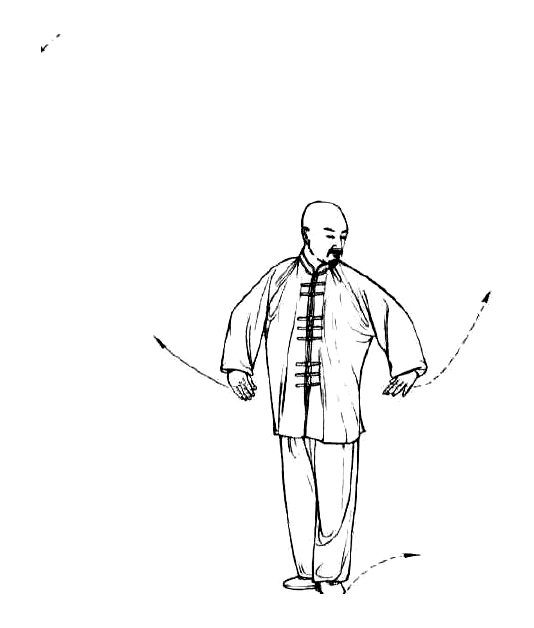
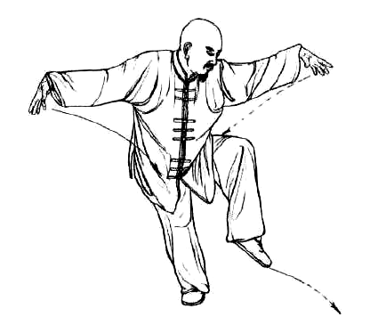
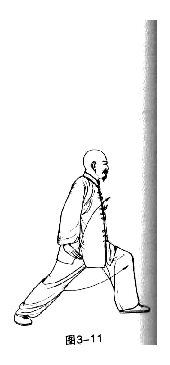
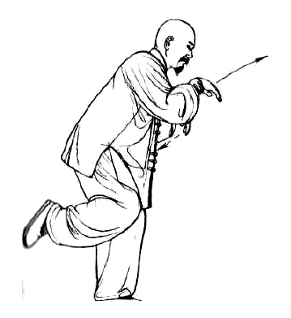
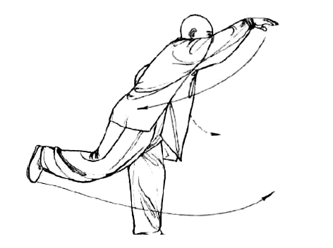
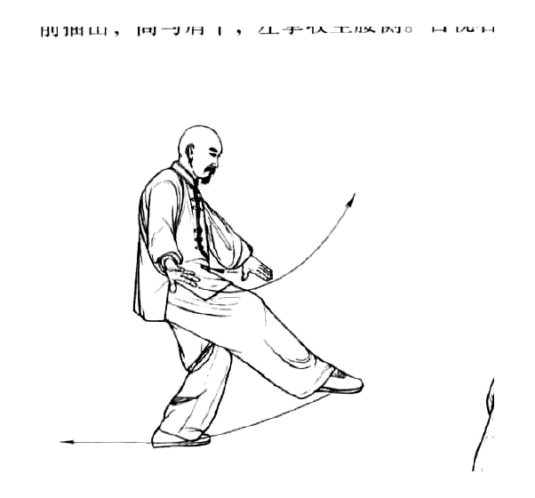
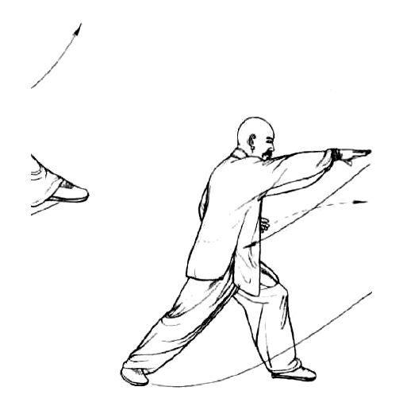
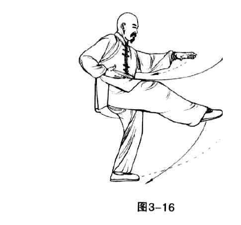
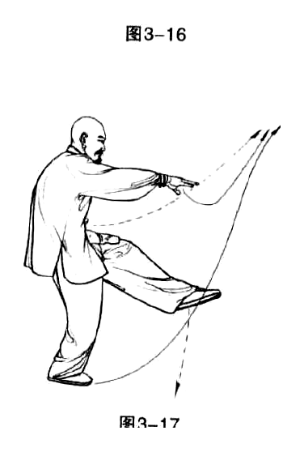
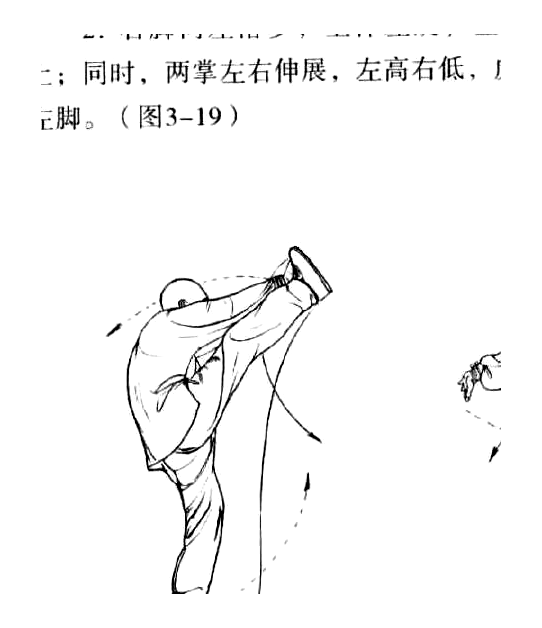
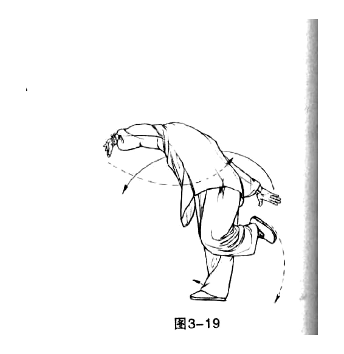
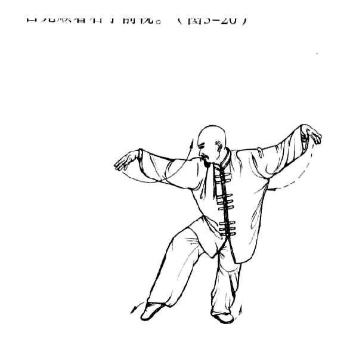
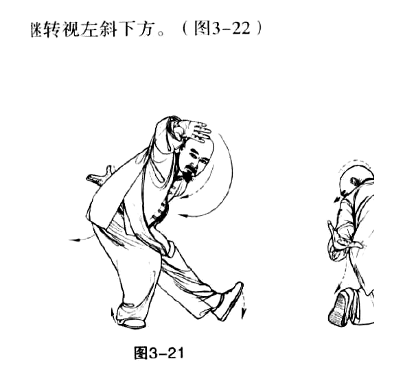
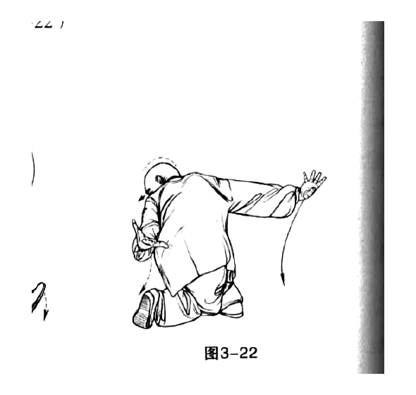
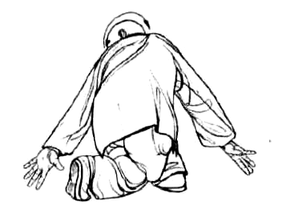
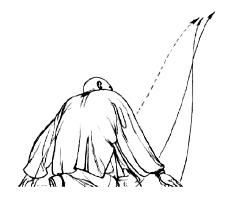
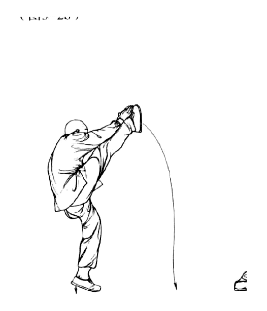
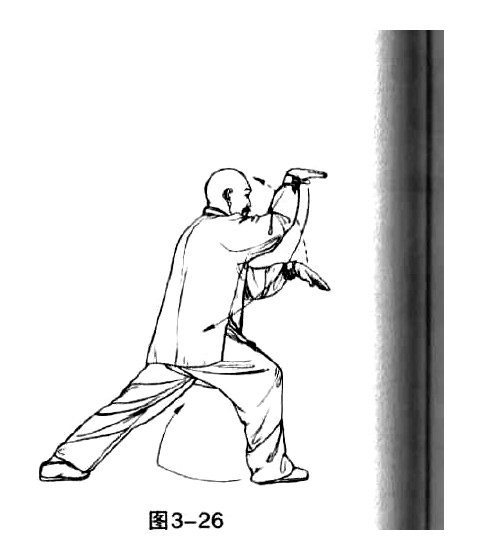
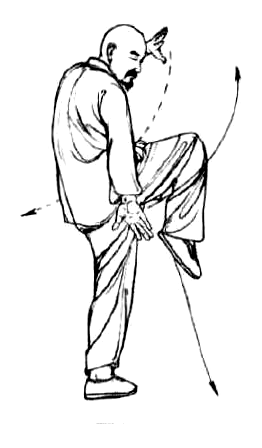
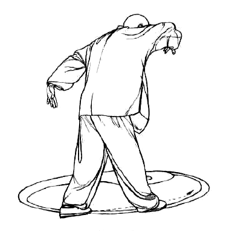
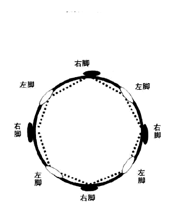
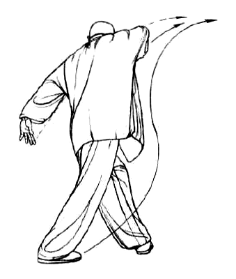
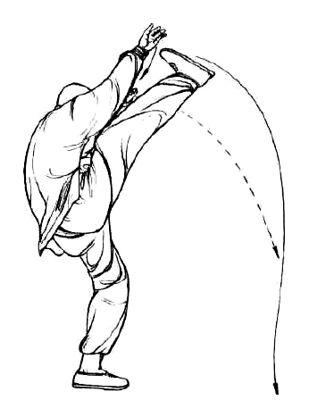